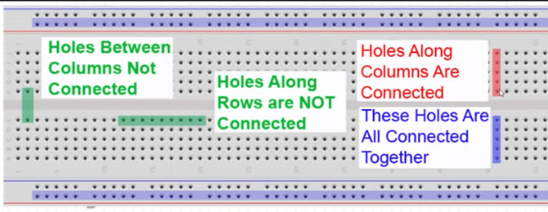
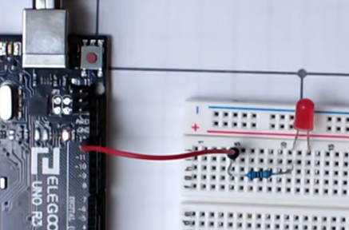

The term “breadboard” harks back to a time when electronics were a bit more... hands on. In the early days of electronics, hobbyists and engineers would use literal breadboards—wooden boards used for cutting and preparing bread—as makeshift platforms for their circuits. The holes in these boards were used to hold components and wires. This was less about hygiene and more about necessity, as purpose-built circuit boards hadn’t yet been invented.

Early “breadboard” for electronics work, repurposed from actual breadboards.
Modern breadboards are made of plastic and features a grid of interconnected holes that allow you to insert and connect various electronic components without soldering. It retains the name because of its origins, even though it’s evolved quite a bit.
Modern breadboards are a bit more sophisticated than their wooden ancestors.
The central part of the breadboard is divided into columns of holes. Each column is electrically connected, which means components placed in the same column are connected together. Like the diagram depicts holes along columns are connected together while holes along rows are not. Holes can not be connected across the gap present in the bread board.
However the holes present on either side of the bread board along the "+" and "-" strips can connect across both rows and columns. These are known as power rails and are long rows on the top and bottom of the breadboard, usually marked with red and blue lines. They’re used for distributing power to the various components on the board.
